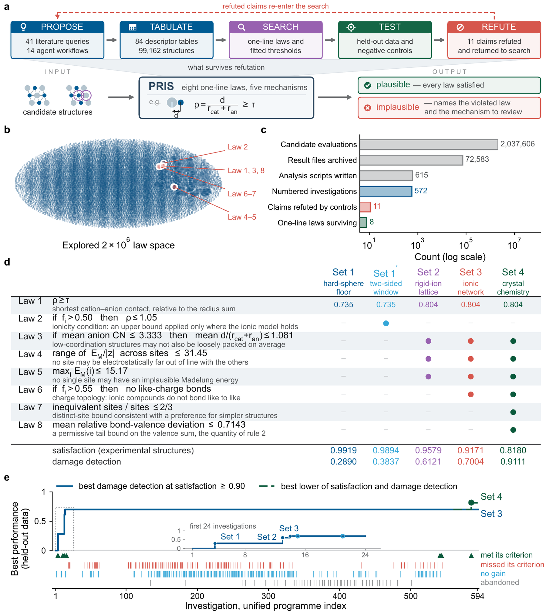
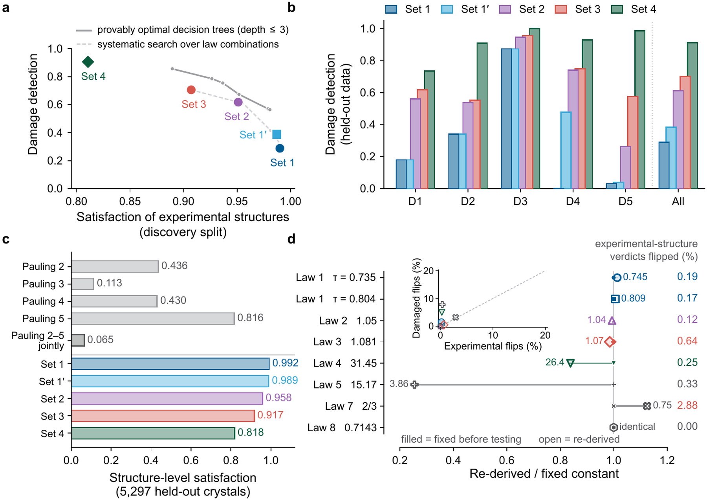
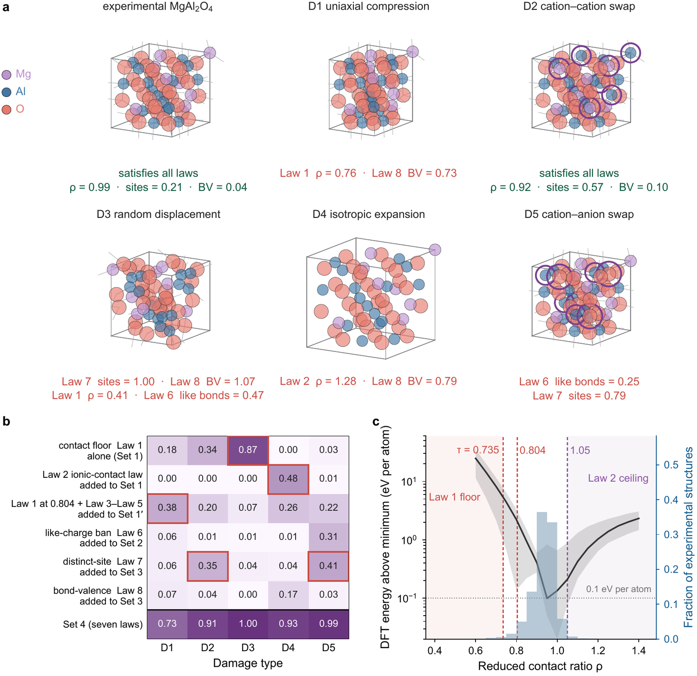
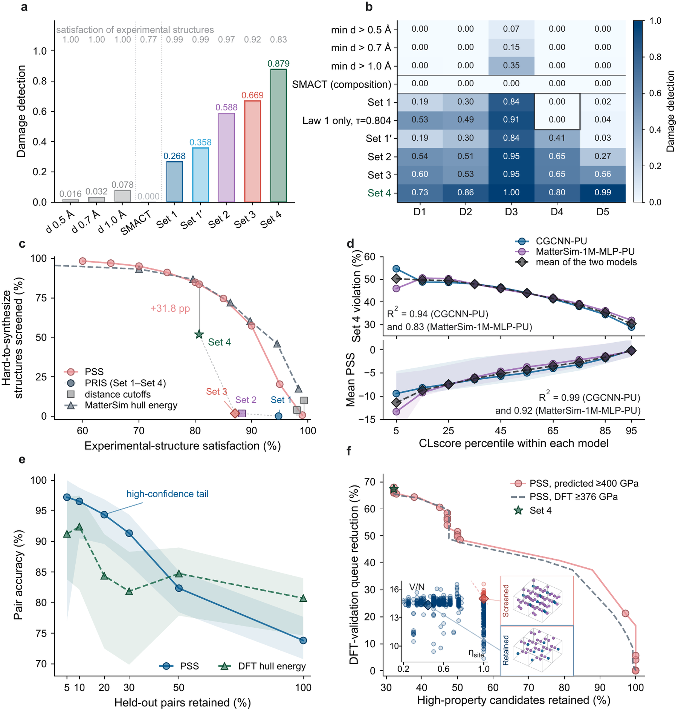
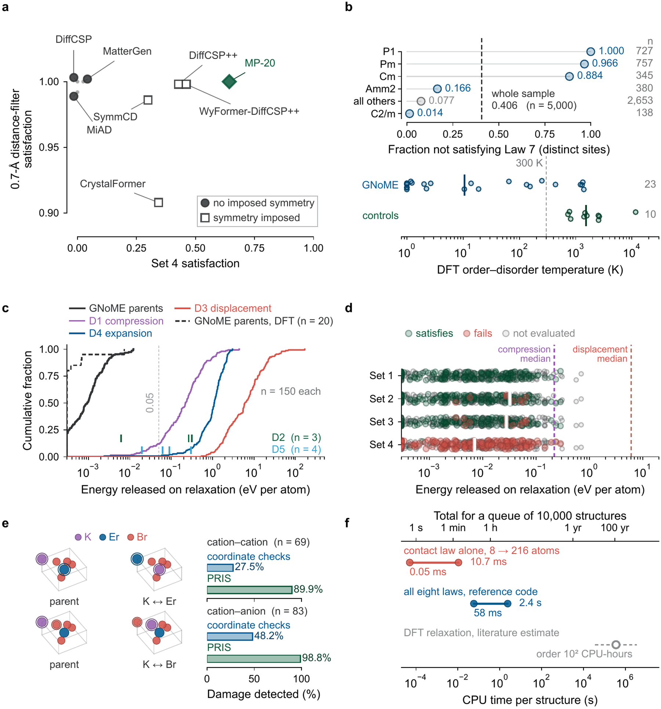
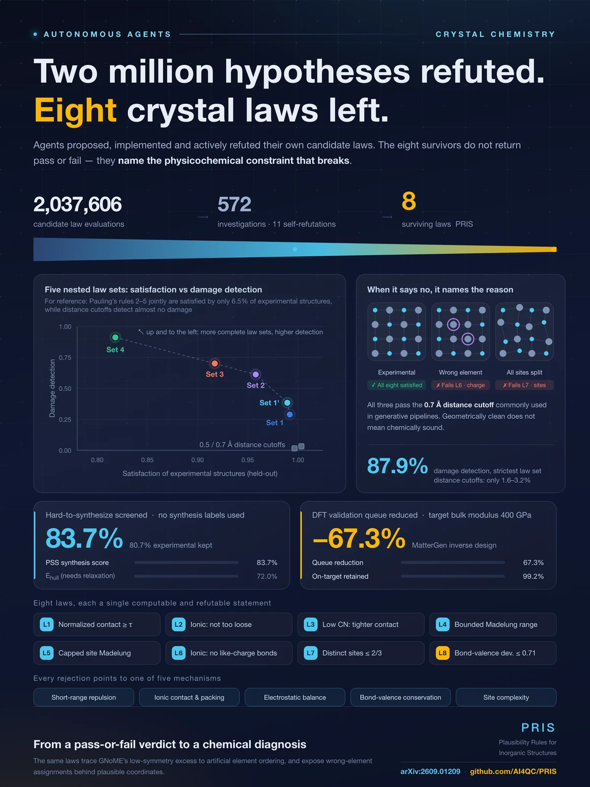
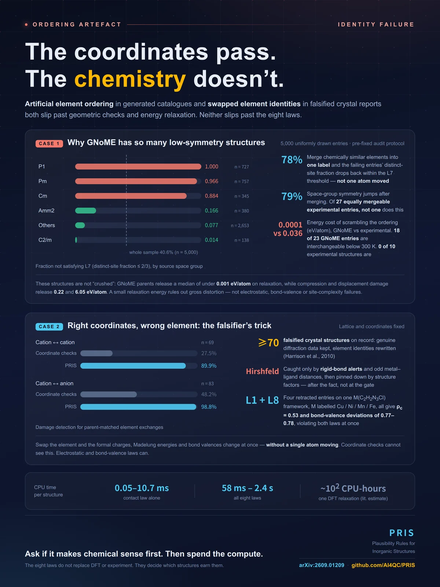

Agents proposed, implemented and actively refuted their own candidate laws. The eight survivors do not return pass or fail: they name the physicochemical constraint that breaks.
Crystal generators and tool-using agents propose structures faster than density functional theory (DFT) energy and phonon calculations or experiments can assess them. Deciding which candidates merit expensive assessment is therefore the bottleneck, yet most screens test little beyond atomic overlap and give no chemical reason for failure. Here, our agents generate, test and actively refute two million candidate laws, leaving eight Plausibility Rules for Inorganic Structures (PRIS). These laws encode five mechanisms: short-range repulsion, ionic contact and packing, electrostatic balance, bond-valence conservation and crystallographic site complexity. Experimental structures satisfy our law sets at 82–99%, but satisfy Pauling's rules 2–5 together at only 6.5%. The strictest set detects 87.9% of damaged crystal structures, whereas distance cutoffs detect only 1.6–3.2%.
PRIS plausibility is linearly correlated with synthesizability, so the PRIS-derived synthesis score (PSS) explainably screens 83.7% of hard-to-synthesize structures while retaining 80.7% of experimental structures. In a property-conditioned inverse-design run, PRIS and PSS can reduce the DFT validation queue by up to 67.3% and keep 99.2% of the candidates whose DFT-validated bulk moduli reach the design target. Beyond screening, PRIS explains why GNoME remains enriched in rare low-symmetry structures and reveals how wrong-element assignments in falsified crystal reports hide behind plausible coordinates. PRIS moves screening from a pass-or-fail verdict to a chemical reason for failure, showing that autonomous agents can discover, by active refutation, physicochemical laws that guide calculations and experiments.
A good plausibility law must keep experimental structures, detect damaged ones at a high rate, and say why a structure is implausible. Measured on both axes at once, the two classical answers err in opposite directions.
Inexpensive and almost always satisfied, but it examines neither chemical ordering nor elemental identity. Avoiding gross overlap does not make coordination, electrostatics or bond valence plausible.
Chemically reasoned but too strict when applied together: an earlier audit found 13% of about 5,000 oxides satisfied rules 2–5, and among charge-balanced ionic experimental structures only 6.5% did.
Keeps experimental structures, detects damage, and every failure names the violated law and the mechanism to review. Runs on the structure as given, without relaxation or a phase-hull reference.
Every law is a one-line predicate over quantities computable from a structure file and a radius table: no relaxation, no training, no synthesis label. A conditional law is satisfied by any structure whose trigger is not met, so the clauses of Law 2, Law 3 and Law 6 confine each law to its domain.
ρ is the reduced contact ratio (shortest cation–anion distance over the sum of the Shannon radii), fi is Pauling's composition-based estimate of ionic character, EM(i) is the site Madelung energy from an Ewald sum over formal charges, zi the formal charge at site i, and site complexity is inequivalent sites over sites at spglib symprec 0.01. Charges are formal oxidation states inferred from composition, never from bond lengths, so a bond-length law is never tested on its own conclusion.
| set · crystal model · laws | satisfied | detected |
|---|---|---|
| Set 1 hard-sphere floor Law 1 (τ = 0.735) | 0.9919 | 0.2890 |
| Set 1′ two-sided window Law 1 (τ = 0.735) + Law 2 | 0.9894 | 0.3837 |
| Set 2 rigid-ion lattice Law 1 (τ = 0.804), Law 3–Law 5 | 0.9579 | 0.6121 |
| Set 3 ionic network Set 2 + Law 6 | 0.9171 | 0.7004 |
| Set 4 crystal chemistry Set 3 + Law 7, Law 8 | 0.8180 | 0.9111 |
A pre-registered protocol fixed the criteria, the data split and the vocabulary before any evaluation. The agents then ran 572 numbered investigations over 99,162 experimental crystal structures. Refuted claims re-enter the search, so the cycles form a sequence of falsifiable experiments.
Set 1 to Set 4 are conservative discrete screens that name a violated mechanism. PSS, the PRIS-derived synthesis score, refits the same quantities to the experimental record of what has been made and gives continuously tunable control over how strongly the combined evidence shortens a queue.
Artificial element ordering in generated catalogues and swapped element identities in falsified crystal reports both slip past geometric checks and energy relaxation. Neither slips past the eight laws.
Law 1 evaluates 10,000 cells of 6–20 atoms in under one second, and all eight laws on the same queue take approximately ten minutes. The same queue would cost approximately one million CPU-hours of DFT relaxation, so a full PRIS evaluation costs under one millionth as much. The eight laws do not replace DFT or experiment. They decide which structures earn them.
Click any figure to enlarge. Every figure is drawn from aggregate data committed in the repository, and figures/manifest.json maps each one to the script that draws it.





Thresholds and PSS weights are read from the frozen artefacts in agent_loop/frozen/, so a verdict produced today is the verdict the manuscript reports.
# Python ≥ 3.10 git clone https://github.com/AI4QC/PRIS.git cd PRIS pip install -r requirements.txt python src/pris_analyze.py mystructure.cif python src/pris_analyze.py --quiet *.cif # one verdict line per file python src/pris_analyze.py --json POSCAR # machine-readable
$ python src/pris_analyze.py --quiet damaged/*.cif IMPLAUSIBLE compressed.cif bond-valence conservation, short-range repulsion IMPLAUSIBLE expanded.cif bond-valence conservation
Roughly 19% of structures cannot be judged (multiple anions, complex molecular groups, no integer or fractional charge assignment). "Skipped" does not mean "passed."
MgAl2O4, 14 sites, charges from integer charge balancing, f_i = 0.759 law quantity measured thresh verdict mechanism Law 1 reduced contact rho 0.9865 0.8040 ok short-range repulsion Law 2 reduced contact rho 0.9865 1.0500 ok ionic contact Law 3 mean reduced cation-anion contact 4.0000 1.0810 -- packing Law 4 range of site Madelung / valence 3.6122 31.4500 ok electrostatic balance Law 5 largest site Madelung energy -20.2144 15.1700 ok electrostatic balance Law 6 fraction of like-charge bonds 0.0000 0.0001 ok electrostatic balance Law 7 inequivalent sites / sites 0.2143 0.6667 ok site complexity Law 8 mean |BV sum - v_i| / v_i 0.0384 0.7143 ok bond-valence conservation Set 4 crystal chemistry plausible PSS +3.915 VERDICT PLAUSIBLE
Law 3's trigger (mean anion CN ≤ 3.333) is not met here, so the law is satisfied by its clause and reported as --. Formal charges come from composition. BVAnalyzer is never called, because it infers valence from bond lengths and would make the conclusion the premise.
One-page summaries of the paper, sized for social media. Every number on them is quoted from the manuscript.


@article{song2026pris,
title = {Autonomous discovery of new structure-plausibility laws for explainable
and rapid crystal diagnosis and screening},
author = {Song, Zhilong and Cheng, Lixue},
year = {2026},
eprint = {2609.01209},
archivePrefix = {arXiv},
primaryClass = {cond-mat.mtrl-sci},
url = {https://arxiv.org/abs/2609.01209},
}
To cite the software and the frozen law definitions specifically, use the @software entry in the repository README, or GitHub's "Cite this repository" button, which reads CITATION.cff.
{kind=link}
{kind=link}
{kind=link}
{kind=link}